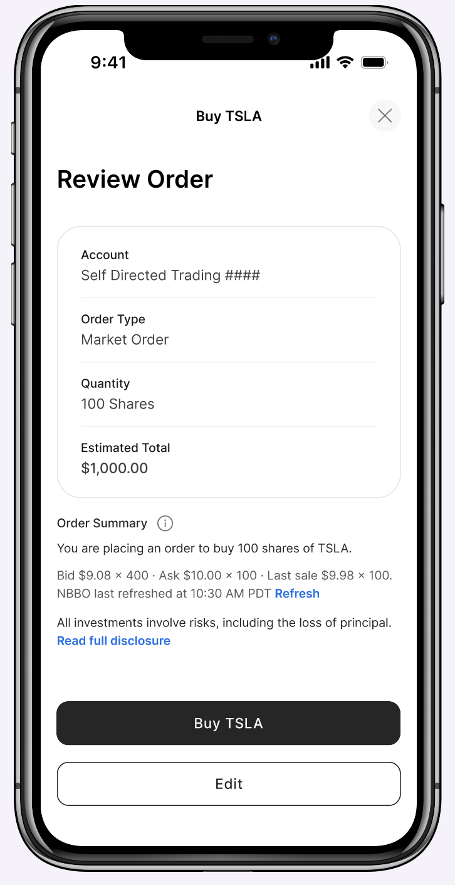

Making self-directed trading better on mobile, and bringing it to web for the first time.
Enhancing Axos's existing stock, ETF, and mutual fund trading experience while launching it on web, as one of the first features built fully in the new 3.0 UI.

An existing product, a new platform, and a new UI at the same time.
The Axos mobile app already offered self-directed trading, but it only supported market and limit orders. The ability to research an asset was practically non-existent. The digest page only displayed a simple data visual and a few key statistics, which left customers with very little to go on before putting their money into something.
My job was to turn that into a trading experience people could actually make decisions in. That meant adding stop and stop-limit orders alongside market and limit, building the digest page out into a real research page with analyst ratings, earnings, and dividend history, and bringing all of it to web, where Axos customers had never been able to trade before.
It was also one of the first features built fully in Axos's new 3.0 UI, which brings the legacy web experience and the 2.0 mobile app together into one system across both platforms. That made trading a test case for the whole initiative, so the patterns set here had to hold up for the rest of the investment experience that follows.
Where things got complicated.
- This had never existed on web before. Trading was mobile-only, so this project had to prove out patterns for a platform that had nothing to build from.
- Order types depend on the asset, not on design. Stocks and ETFs support market, limit, stop, and stop-limit orders. Mutual funds only support market orders.
- Complex orders on a small screen. A stop-limit order asks for several decisions at once, and the mobile experience had to keep that from feeling like a dense form.
- Quotes go stale fast. Stock prices come from a live bid and ask, so customers need to know how current a price is before they commit to it.
- The rules kept changing. Order types and business requirements weren't locked in from day one.
- Customers already use Robinhood. Expectations for how fast and simple trading should feel were set long before anyone touched ours.
One structure that works for every fund and stock.
Stock and ETF research pages share the same chart, the same buy panel, and the same layout, so if you know how to read one, you already know how to read the other. What changes is the content underneath. Stocks get analyst ratings, earnings, and dividend history, and the shared frame flexes around whatever each asset actually has. The buy panel lets people pick an order type up front, since for stocks and ETFs a market order is one option among several, not the only one.

One flow, multiple levels of complexity.
Buying and selling share the same order-entry logic, just flipped. Mutual funds only support market orders, so that flow is just: type a dollar amount, review it, confirm it. Stocks and ETFs support all four order types, so I broke that flow into steps instead of one long form. Picking a stop-limit order walks you through setting the stop price, then the limit price, then how long the order should stay open, with the live price visible the whole time.
That step-by-step approach was a deliberate call for mobile. Showing stop price, limit price, and expiration on a small screen in one form felt overwhelming and easy to get wrong. Breaking it into individual steps kept each decision focused and gave people room to actually think about what they were entering, instead of scanning a dense form and second-guessing themselves.
Same logic, different density.
Bringing trading to web didn't mean stretching the mobile screens to fit a bigger window. The order logic stays identical on both platforms, so a stop-limit order asks for the same things in the same order, but the layout adapts to the space. On desktop, that same order fits into a single modal instead of separate steps, since there's enough room to take in several fields at once without it feeling overwhelming.
Keeping the logic shared and letting only the layout change also made the 3.0 work easier to scale. Engineering could build one set of order rules, and the features that follow in the new UI have a working example of how a complex flow can translate between platforms.
Showing exactly how current a quote is.
Stock prices come from a real bid and ask that can go stale within seconds. I added a timestamp and a manual refresh button to the review screen, so people know exactly how current their quote is before they confirm, instead of wondering whether the number in front of them still means anything.
A disclosure sits right above the confirm button, written specifically about the risk of losing principal rather than as a generic legal block, so it reads as part of the decision instead of fine print to scroll past.

Building for change instead of waiting for it to stop.
The business hadn't fully decided what it wanted, so requirements could shift before I even finished designing for the last version. I built the order-type and account logic as configurable rules instead of hardcoding anything, so when something changed, I could update one setting instead of redoing a screen.
That same flexibility is what let the trading experience grow. Search, research, and order entry were designed as a shared foundation, which is how Bitcoin trading, designed alongside this work, could plug into the same product instead of becoming a separate app. That work is its own story, covered in the crypto trading case study.
Engineering is building against these flows now, with launch targeted in the next few months. For the first time, Axos customers will be able to trade stocks, ETFs, and mutual funds on web, with the same order logic they already know from mobile. On mobile, complex order types now walk people through one decision at a time. And as one of the first features in the 3.0 UI, it gave the rest of the platform a working model for how to carry a complex flow across both screens.